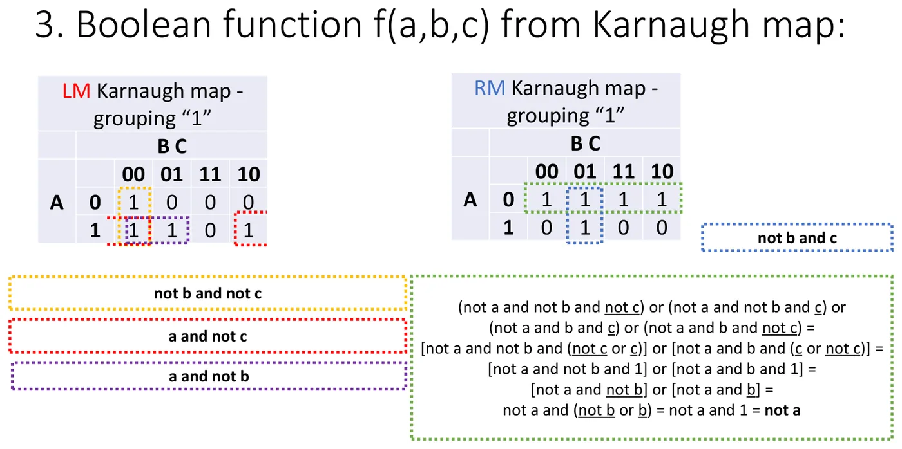
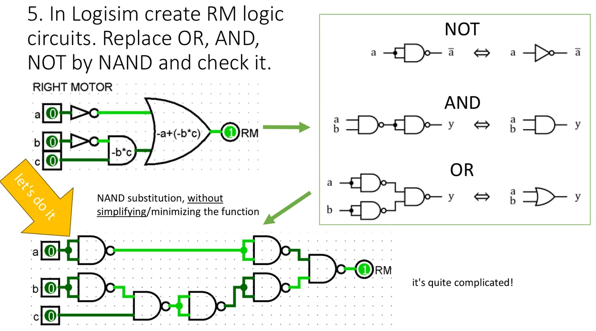

What you need to know before the class
- The Karnaugh map, Gray code, the merging rule — lecture 7 (Quick summary).
- Using Logisim and the NAND bricks — lab 7.
There are two tasks in class (from the lecture slide): a four-variable function assigned by the instructor — its minimal form on NAND gates; and the control of the robot from the previous class — on NOR gates only.
The recipe in five steps
Step by step
- Truth table — list the combinations for which the function is 1.
- Karnaugh map — draw the grid, label the columns (and rows) in the order 00, 01, 11, 10 and write in the ones.
- Groups — outline the ones with rectangles of 1, 2, 4 or 8 cells. Groups as large as possible, as few as possible, they may overlap, the map "wraps around" at the edges.
- Formula — for each group write only the variables that do not change inside it (0 → negated, 1 → plain). Join the groups with pluses.
- Convert to NAND — replace every AND gate and the final OR with NAND. Done.
The most common mistake
The map columns are 00, 01, 11, 10 — not 00, 01, 10, 11. The last two columns are "swapped" so that neighbouring cells differ in one bit only. A slip here ruins everything that follows.
Example from the materials: the robot
The truth table from the previous class goes into two maps — one for each motor. The row is sensor A, the columns are sensors B and C.
Left motor (LM):
| A ↓ / BC → | 00 | 01 | 11 | 10 |
|---|---|---|---|---|
| 0 | 1 | 0 | 0 | 0 |
| 1 | 1 | 1 | 0 | 1 |
Right motor (RM):
| A ↓ / BC → | 00 | 01 | 11 | 10 |
|---|---|---|---|---|
| 0 | 1 | 1 | 1 | 1 |
| 1 | 0 | 1 | 0 | 0 |


Groups for LM (three pairs):
| Group | Cells (ABC) | What changes | What remains |
|---|---|---|---|
| yellow (vertical) | 000, 100 | A | · |
| purple | 100, 101 | C | a· |
| red (across the edge) | 100, 110 | B | a· |
Groups for RM:
| Group | Cells (ABC) | What changes | What remains |
|---|---|---|---|
| green (the whole row) | 000, 001, 011, 010 | B and C | |
| blue (vertical) | 001, 101 | A | ·c |
In plain words
The red group joins the first and the last column. That is not a mistake: imagine the map glued around a tin can — the left and right edges touch each other.
Converting to NAND gates
Two tools: double negation (Q = — changes nothing) and De Morgan's law ( = ·).
For the right motor, step by step:
That is: RM = a NAND (~b NAND c). The left motor works the same way:
That is: LM = (~b NAND ~c) NAND (a NAND ~c) NAND (a NAND ~b) — three two-input NAND gates and one three-input gate.
A shortcut worth remembering
A "sum of products" formula is converted to NAND without any calculation: every AND → NAND, the final OR → NAND. The only trap: a term that is a single variable (like in RM) enters the last gate negated (i.e. as a).


Class task 1: a four-variable function on NAND
Everyone gets their own function from the instructor. The path is always the same — an example follows.
From the site author (not in the lecture)
My own example: a function chosen by me, different from the one in the materials.
Function: f(a,b,c,d) = Σ(1, 3, 4, 5, 9, 11, 12, 14) — i.e. f = 1 for these row numbers (the number is abcd read as a binary number).
Cell numbers on the 4 × 4 map (row ab, column cd):
| ab ↓ / cd → | 00 | 01 | 11 | 10 |
|---|---|---|---|---|
| 00 | 0 | 1 | 3 | 2 |
| 01 | 4 | 5 | 7 | 6 |
| 11 | 12 | 13 | 15 | 14 |
| 10 | 8 | 9 | 11 | 10 |
The map of the function:
| ab ↓ / cd → | 00 | 01 | 11 | 10 |
|---|---|---|---|---|
| 00 | 0 | 1 | 1 | 0 |
| 01 | 1 | 1 | 0 | 0 |
| 11 | 1 | 0 | 0 | 1 |
| 10 | 0 | 1 | 1 | 0 |
Groups:
| Group | Cells | Constant variables | Term |
|---|---|---|---|
| a four (top and bottom row — across the edge) | 1, 3, 9, 11 | b = 0, d = 1 | ·d |
| a pair | 4, 5 | a = 0, b = 1, c = 0 | ·b· |
| a pair (across the edge) | 12, 14 | a = 1, b = 1, d = 0 | a·b· |
On NAND: f = (~b NAND d) NAND (~a NAND b NAND ~c) NAND (a NAND b NAND ~d).
Step by step
- In Logisim insert four inputs
a,b,c,dand an outputf. - Make the negations: four NAND gates with tied inputs (or NOT, if the instructor allows it).
- Insert three "first-floor" NAND gates — one per group. Set the right number of inputs for them (2, 3, 3).
- Insert one "second-floor" NAND gate with three inputs and connect the outputs of the previous three to it.
- Check all 16 combinations. Fastest: Project → Analyze Circuit and compare the result column with the Σ list.
Self-check
Count the ones. The function has 8 ones; the groups have 4 + 2 + 2 = 8 cells and none repeats — it matches. If the sum of cells in the groups is smaller than the number of ones, some one is not covered.
Class task 2: implementation on NOR only
For NOR gates the recipe is a mirror image: we group the zeros, not the ones.
Step by step
- On the map outline groups of zeros (the same rules: 1, 2, 4, 8 cells).
- For each group write the sum of the variables that do not change — but the other way round than for ones: 0 → plain, 1 → negated.
- Multiply the sums together. This is the "product of sums" form.
- Replace every OR and the final AND with NOR. A single variable enters the last gate negated.
From the site author (not in the lecture)
The robot on NOR is for you to do in class — it is a graded task. Below is the same method on a different circuit, so that you can see every step.
Example: an automatic greenhouse
Three sensors: S — dry soil (1 = dry), T — too hot (1), R — it is raining (1). Two outputs: P — the pump, V — the roof is open.
| S | T | R | Situation | P | V |
|---|---|---|---|---|---|
| 0 | 0 | 0 | everything is fine | 0 | 0 |
| 0 | 0 | 1 | raining, soil wet | 0 | 0 |
| 0 | 1 | 0 | hot → ventilate | 0 | 1 |
| 0 | 1 | 1 | hot, but raining and the soil is wet → roof closed | 0 | 0 |
| 1 | 0 | 0 | dry → pump | 1 | 0 |
| 1 | 0 | 1 | dry; raining, but it is cold → roof closed, pump on | 1 | 0 |
| 1 | 1 | 0 | dry and hot → pump and ventilation | 1 | 1 |
| 1 | 1 | 1 | dry, hot, raining → open the roof, the rain waters for free | 0 | 1 |
Map of P:
| S ↓ / TR → | 00 | 01 | 11 | 10 |
|---|---|---|---|---|
| 0 | 0 | 0 | 0 | 0 |
| 1 | 1 | 1 | 0 | 1 |
Map of V:
| S ↓ / TR → | 00 | 01 | 11 | 10 |
|---|---|---|---|---|
| 0 | 0 | 0 | 0 | 1 |
| 1 | 0 | 0 | 1 | 1 |
From the ones (on NAND):
- P: pairs (100, 101) and (100, 110 — across the edge) → P = S· + S· → P = (S NAND ~T) NAND (S NAND ~R)
- V: pairs (010, 110) and (111, 110) → V = T· + S·T → V = (T NAND ~R) NAND (S NAND T)
From the zeros (on NOR):
| Output | Group of zeros | Constant variables | Factor |
|---|---|---|---|
| P | the whole top row | S = 0 | S |
| P | 011, 111 | T = 1, R = 1 | + |
| V | columns 00 and 01 (four cells) | T = 0 | T |
| V | 001, 011 | S = 0, R = 1 | S + |
Conversion to NOR (OR → NOR, final AND → NOR, a single variable negated):
- P = (~S) NOR (~T NOR ~R)
- V = (~T) NOR (S NOR ~R)
Checking one row
S = 1, T = 0, R = 1 (should give P = 1): ~S = 0; ~T NOR ~R = NOR(1, 0) = 0; NOR(0, 0) = 1 ✓
Practice tasks
1. Three variables
Minimise f(a,b,c) = Σ(0, 2, 4, 5, 6) and write it on NAND.
Show solution
| a ↓ / bc → | 00 | 01 | 11 | 10 |
|---|---|---|---|---|
| 0 | 1 | 0 | 0 | 1 |
| 1 | 1 | 1 | 0 | 1 |
A four: columns 00 and 10 (across the edge) → . A pair: 100, 101 → a·.
f = + a· → f = c NAND (a NAND ~b) (the single variable enters as c).
2. Voting
Three judges vote (1 = in favour). The result should be 1 when at least two are in favour. Find the minimal formula and the NAND version.
Show solution
Ones: 011, 101, 110, 111 → Σ(3, 5, 6, 7).
| a ↓ / bc → | 00 | 01 | 11 | 10 |
|---|---|---|---|---|
| 0 | 0 | 0 | 1 | 0 |
| 1 | 0 | 1 | 1 | 1 |
Three pairs, all through cell 111: f = a·b + a·c + b·c.
f = (a NAND b) NAND (a NAND c) NAND (b NAND c) — four gates, no negations.
3. Four variables on NAND
Minimise f(a,b,c,d) = Σ(0, 1, 2, 5, 8, 9, 10).
Show solution
| ab ↓ / cd → | 00 | 01 | 11 | 10 |
|---|---|---|---|---|
| 00 | 1 | 1 | 0 | 1 |
| 01 | 0 | 1 | 0 | 0 |
| 11 | 0 | 0 | 0 | 0 |
| 10 | 1 | 1 | 0 | 1 |
- The four corners (0, 2, 8, 10) → ·
- The four 0, 1, 8, 9 → ·
- The pair 1, 5 → ··d
f = · + · + ··d
On NAND: (~b NAND ~d) NAND (~b NAND ~c) NAND (~a NAND ~c NAND d).
4. The same function on NOR
For the function of task 3 group the zeros and write the NOR implementation.
Show solution
Zeros: 3, 4, 6, 7, 11, 12, 13, 14, 15.
- The whole row 11 (12, 13, 15, 14): a = 1, b = 1 → ( + )
- The four 4, 6, 12, 14 (across the edge): b = 1, d = 0 → ( + d)
- The whole column 11 (3, 7, 15, 11): c = 1, d = 1 → ( + )
f = ( + )·( + d)·( + )
On NOR: (~a NOR ~b) NOR (~b NOR d) NOR (~c NOR ~d).
5. Why not three?
The map has three ones next to each other in one row. Why may you not make one group of them?
Show solution
A group must have 1, 2, 4 or 8 cells, because only then does the variable that changes inside it take both values with every combination of the others — and so it disappears (x + = 1). Three cells do not give such a pair. The solution: two pairs that overlap on the middle cell.
What costs points most often
- Columns in the order 00, 01, 10, 11 instead of 00, 01, 11, 10.
- Overlooked groups "across the edge" and the four corners.
- Groups too small (two pairs instead of one four) — the circuit works but is not minimal.
- With NAND: a single variable fed to the last gate without inverting it.
- With NOR: grouping ones instead of zeros, or forgetting to swap the negations (0 → no bar).